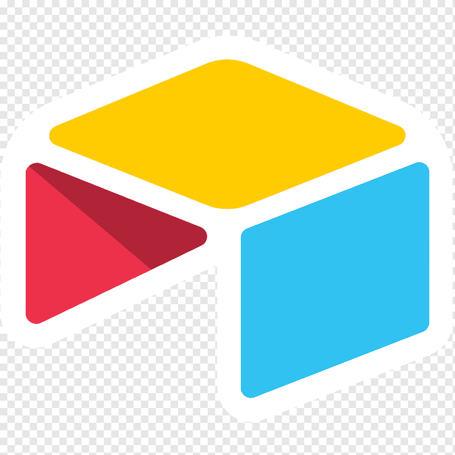
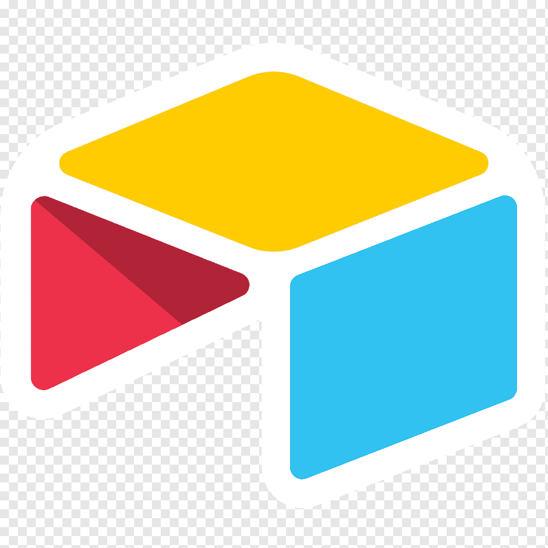

Sobre
Me chamo Julyana, tenho 27 anos e moro em Brasília. Amo viajar sozinha, aprender novos idiomas e conhecer novas pessoas. Me amarro em ler, contar histórias e jogar bola
Educação
• MBA em Digital Business - USP/Esalq (2020-2022)
• Gestão de Políticas Públicas - UnB (2013-2016)
• Certificação de Língua Inglesa (Cambridge - Nível B2)
• Espanhol Intermediário
• Francês Intermediário
Experiências Profissionais
- • Softex
2020 - atualmente
Assistente financeira; análise de prestação de contas; automações; Airtable - • Agência Papo de Viagem
2021 - atualmente
CEO; venda de serviços turísticos - • Otimicar
2018 - 2019
Prospecção de clientes; suporte; análise de dados; automações
Habilidades
- • Organização e gerenciamento de tempo;
• Comunicação e proatividade;
• Colaboração e flexibilidade; - • Domínio da língua portuguesa e inglesa;
• Conhecimento em liderança;
• Ética e trabalho em equipe.
Linguagens e Ferramentas
-


 

- • JavaScript, HTML5, CSS3, GitHub, Git
• Airtable, Trello, Slack